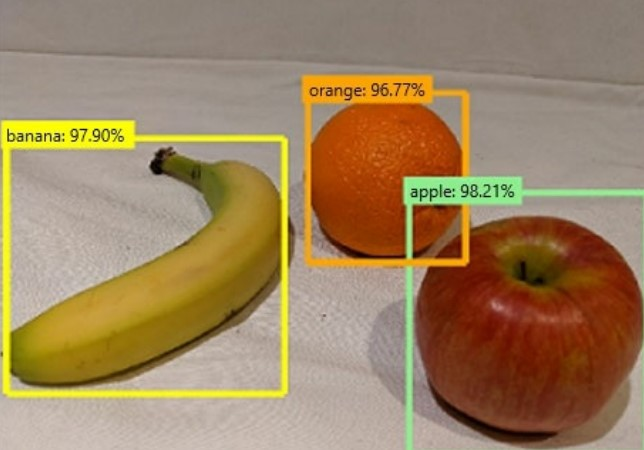

1. Accuracy is always the primary metric used to measure a model's performance.?
2.Predicting how many hours of overtime a delivery person will work based on the number of order received is an example of
3. Understand how accept a customer is based on text contained in the support ticket?
4.Extract key dates from the support ticket?
5. You are developing a Conversational AI solution that will communicate with user through multiple channels including email,Microsoft team, and webchat.Which service should you use?
6. Which condition satisfy the face service?
7. You use drones to identify where weeds grow between rows of crops to send an instruction for the removal of the weeds?
8. Do two images of faces belong to the same person?
9. 
10.You are developing a solution that uses the Text Analytics service. You need to identify the main talking points in a collection of documents. Which type of natural language processing should you use?
11.You plan to develop a bot that will enable users to query a knowledge base by using natural language processing.?
12:In which scenarios can you use a speech synthesis solution? ?
13. You need to make the written press releases of your company available in a range of languages. Which service should you use??
14. You need to provide content for a business chatbot that will help answer simple user queries. What are Two ways to create question and answer text by using QnA Maker?
15. The question `Which act is playing on the main stage?` is an example of which type of elemen?
16: You have a natural language processing (NLP) model that was created by using data obtained without permission? Which Microsoft principle for responsible AI does this breach?